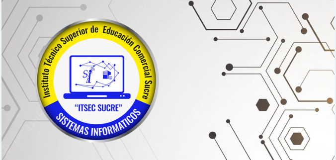

Sistemas Informáticos
Sistemas Informáticos

TITULO
Técnico Superior en Contaduría General
DURACIÓN
Tres periodos académicos
HORARIOS
Turno Tarde: lunes a viernes: 02:00 a :06:00
Turno Nocturno: lunes a viernes: 18:30 a 22:10 p.m.
CARACTERISTICAS PROFESIONALES
El Técnico Superior en Sistemas Informáticos, brinda servicios profesionales en todo campo de manejo y tratamiento de la información. Crea sistemas informáticos para instituciones públicas y privadas, de acuerdo a las exigencias de los usuarios.
- Ensambla equipos de computación.
- Realiza mantenimiento preventivo y correctivo de hardware.
- Instala, configura y opera software.
- Desarrolla programas de sistemas de información
- Crea programas de videojuegos.
- Gestiona y administra base de datos.
- Instala, configura y administra redes físicas y virtuales.
- Brinda soporte informático y de redes.
- Diseña y crea aplicaciones para dispositivos móviles.